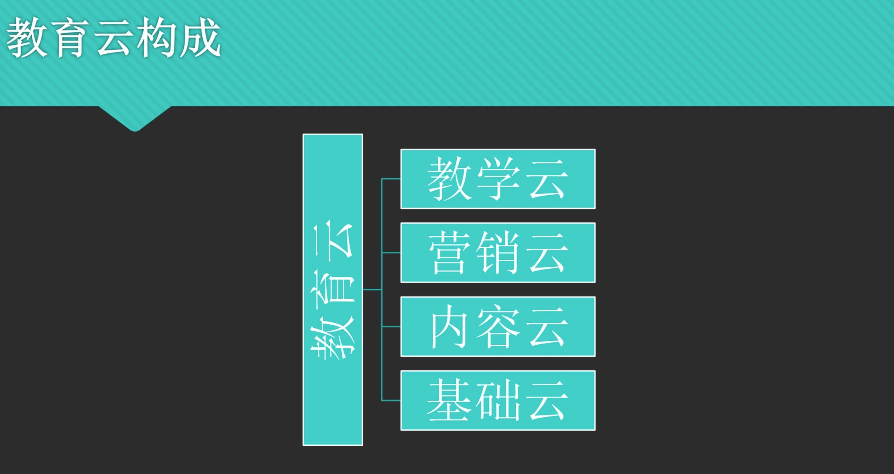

项目背景
• 很多功能，用户不知道如何使用
1.功能新手引导不足，绝大多数功能没有新手引导，用户第一次使用时候要猜测尝试来试用，学习成本高。
2.功能使用和功能设置位置分离，路径较长，使用成本高。
• 使用同一个功能，经常需要跳转好几个页面，例如，优惠券、
新功能/阔知品牌信息需要主动推送客户
目前只能提供「站长公告」功能，相对较弱
• 资源消耗型功能提醒信息触达不足
教育云资源相关的并发或者续费通知不及时（比如“赛优教育”，直播并发经常性超出，后台并没有很好地监控与及时通知）
已经采用了各种通知方式，手机短信/邮件 ，甚至直接打电话催款等。导致额外的客户服务工作量。
• 后台功能信息和价值无法准确有效传递给用户
例如：很多常见的插件客户都不是很清楚，用户不知道在哪里看我们已经提供了那些功能（或插件）很多功能 ES 已经开发过，但是用户不知道在哪里可以获取和使用。
（比如“清大东方”客户希望定制用户导入导出功能，但是ES已经有“用户导入导出”插件）
• 随着功能的不断更新，新的业务摆放变得混乱，提高了用户使用成本
例子：数据实验室-功能实验室-人脸识别
• 后台工作区域宽度窄，未能有效利用屏幕区域。
1.列表字段较多时，横向空间不足，容易导致样式混乱（换行，错位等）
2.同一个屏幕显示的内容少，使用时有不必要的跳转和滚动。
• 运营者对网校没有系统化运营思路
1.对于转型线上的网校运营人员，没有在线的经验，不知道如何玩转线上，网校的功能使用效率低下
客户问题
运营部门的网校运营流程总结
公司战略规划

